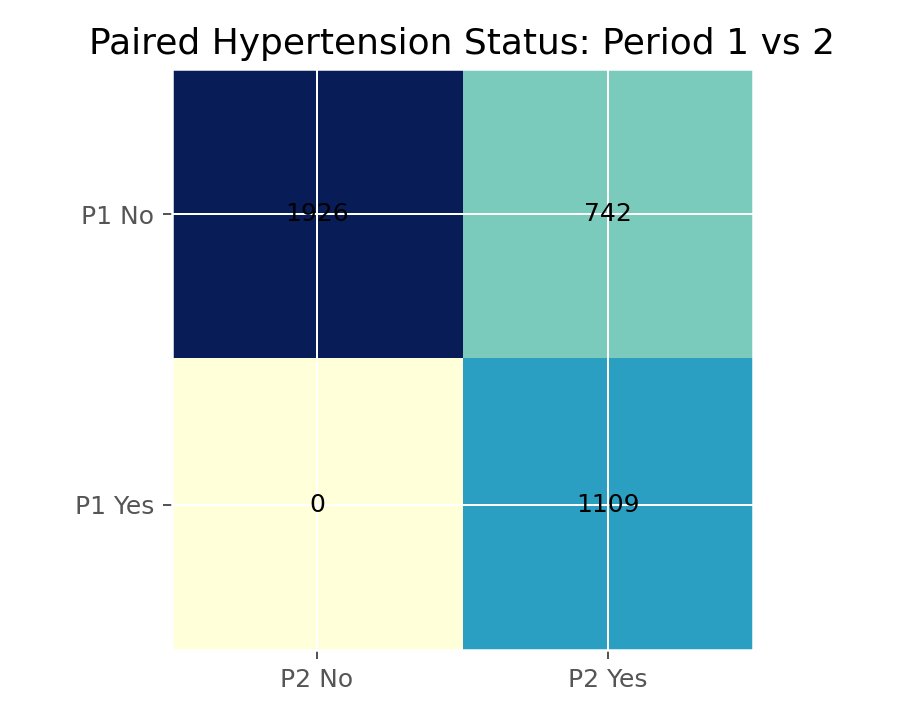

McNemar检验
McNemar检验（McNemar Test）
方法概览
1.1 一句话本质
McNemar 检验用于配对的二分类数据：它只看发生了改变的那些对（前阳后阴、前阴后阳），忽略两次结果一致的对，判断「改变」是否偏向某一方向。
1.2 定义
McNemar 检验用于配对二分类数据，检验配对前后（或两种条件下）阳性比例是否相等（边际同质性），基于「不一致对」的数量。
1.3 它主要解决什么问题
- 研究问题：同一批对象两次二分类测量的阳性率是否变化？
- 适用任务：配对二分类的前后比较、两种诊断方法在同一批人上的阳性率比较。
- 常见医学场景：干预前后患病/阳性状态变化、两种检测方法对同一批样本的阳性判定比较、配对病例对照的暴露比较。
1.4 直觉与类比
一群人参加培训前后各答一道「会/不会」的题。有人「本来会、还是会」，有人「本来不会、还是不会」——这两类人不提供「培训有没有用」的信息（他们没变）。真正有用的是「本来不会、后来会」和「本来会、后来不会」这两拨人。McNemar 就是比较这两拨「变了的人」谁更多。
核心思想与原理
2.1 它到底在解决什么根本困难
配对数据里，同一个人的两次测量高度相关，不满足普通卡方要求的「观测独立」。而且两次都一致的对（both yes / both no）不含「变化方向」的信息。根本困难是：如何在配对结构下，检验两次的阳性率是否发生了系统变化？
2.2 关键洞察
把配对结果排成 2×2 表，对角线（一致对 $a,d$）与检验无关，只有非对角的不一致对 $b$（前阳后阴）与 $c$（前阴后阳）携带变化信息。若前后阳性率相等，则「一增一减」应对称，即 $b\approx c$。于是检验退化为：在 $b+c$ 个变化里，偏向某方向的是否显著多于一半——本质是一个 $p=0.5$ 的二项检验。
2.3 与朴素/相邻做法的对比
- 相对普通卡方：卡方要求独立观测，配对数据必须用 McNemar。
- 相对配对 t 检验：配对 t 用于配对连续结局，McNemar 用于配对二分类。
- 相对 Cochran's Q：Q 是 McNemar 在「三个及以上配对条件」的推广。
数学形式
3.1 核心公式
$$ \chi^2=\frac{(b-c)^2}{b+c},\qquad df=1 $$
其中 $b,c$ 是两类不一致对的数量。这个式子在说：只用两类「变化对」的差 $b-c$ 相对其总量 $b+c$ 做标准化；一致对完全不进入公式。
3.2 推导脉络
- 配对 2×2 表：$a$（both+）、$b$（前+后−）、$c$（前−后+）、$d$（both−）。
- 原假设「边际同质」等价于 $b$ 的期望等于 $c$，即在 $b+c$ 个不一致对中每个以 $1/2$ 概率落向任一侧。
- 于是 $b\sim\mathrm{Binomial}(b+c,\ 1/2)$；正态近似给 $\chi^2=(b-c)^2/(b+c)$，近似自由度 1 的卡方。
- $b+c$ 较小时用精确二项检验；也可加连续性校正 $(|b-c|-1)^2/(b+c)$。
3.3 参数与统计量含义
- $a,d$：一致对（对检验无贡献）。
- $b,c$：不一致对，检验的核心。
- $\chi^2=(b-c)^2/(b+c)$：统计量。
- p 值：变化是否显著偏向一方；效应看 $b/c$ 或比例差。
3.4 关键假设（含违反后果）
| 假设 | 含义 | 违反后会怎样 | 如何粗查 |
|---|---|---|---|
| 配对结构 | 数据成对 | 误用普通卡方 | 看设计 |
| 对子独立 | 不同对子互不影响 | p 失真 | 看设计 |
| $b+c$ 足够 | 不一致对不太少 | 近似失准 | $b+c\lt 25$ 用精确版 |
手把手算例
某疗法前后患者「阳性/阴性」状态的配对表：
| 后阳性 | 后阴性 | 行合 | |
|---|---|---|---|
| 前阳性 | 20 ($a$) | 15 ($b$) | 35 |
| 前阴性 | 5 ($c$) | 60 ($d$) | 65 |
一步步计算：
- 一致对：$a=20$（一直阳）、$d=60$（一直阴）——不进入公式。
- 不一致对：$b=15$（前阳后阴，即好转）、$c=5$（前阴后阳，即恶化）。
- 统计量：$\chi^2=\dfrac{(b-c)^2}{b+c}=\dfrac{(15-5)^2}{15+5}=\dfrac{100}{20}=5.0$，$df=1$。
- 临界值 $\chi^2_{0.05,1}=3.84$；因 $5.0\gt 3.84$，拒绝「前后阳性率相等」。
结论： 在 20 个状态改变的人里，15 人好转、仅 5 人恶化，方向明显偏向好转，$\chi^2=5.0$ 显著。前阳性率 35% 降到后阳性率 25%（$a+c=25$）。注意：80 个「没变」的人（$a+d$）虽占多数，却对结论毫无贡献——McNemar 的全部信息都来自那 20 个变化的人，这正是它区别于普通卡方的精髓。
数据形式与输入输出
5.1 适合的数据形式
- 自变量类型：配对条件（前/后、方法 A/B）。
- 因变量类型：二分类。
- 数据结构：配对 2×2 表。
- 是否适合高维数据：否；多条件用 Cochran's Q。
- 是否适合缺失较多数据：仅用完整对子。
- 是否适合删失数据：不适合。
- 是否适合重复测量数据：两次；多次用 Cochran's Q。
5.2 示例表格
| 后阳 | 后阴 | |
|---|---|---|
| 前阳 | 20 | 15 |
| 前阴 | 5 | 60 |
5.3 输入与产出
输入
- 输入数据：配对二分类结果。
- 关键变量：两次测量、对子标识。
- 需要预处理的内容：制配对 2×2 表。
产出
- 模型对象/统计结果：$\chi^2$、p 值。
- 参数估计：不一致对之比 $b/c$、比例差。
- 预测结果：无。
- 不确定性指标：比例差的置信区间。
适用场景
- 适合：配对二分类前后比较、两法阳性率比较、配对病例对照。
- 不适合：独立组（用卡方）、连续配对结局（用配对 t）、多条件（用 Cochran's Q）。
- 使用前需要特别检查的点：数据配对、$b+c$ 是否够大（否则精确版）。
实现
常用包：
statsmodels
from statsmodels.stats.contingency_tables import mcnemar
table = [[20, 15], [5, 60]]
res = mcnemar(table, exact=False, correction=False) # b+c 小时 exact=True
print(f"stat={res.statistic:.2f}, p={res.pvalue:.4f}") # 5.00
常用包：
stats
table <- matrix(c(20, 15, 5, 60), nrow = 2, byrow = TRUE)
mcnemar.test(table, correct = FALSE)
结果如何解读
- 核心结果看什么：$\chi^2$/p，以及 $b$ 与 $c$ 的方向与比例。
- 每个主要参数如何解读：$b\gt c$ 说明前阳性者更多转阴（好转方向）。
- 临床或医学意义如何表达：报告前后阳性率变化及方向，而非只报 p。
- 常见误读：把一致对也算进「变化」；忽略方向只看显著性。
假设诊断与稳健性
- 样本量：$b+c\lt 25$ 时用精确二项检验或连续性校正。
- 配对确认：务必确认数据真的是配对，否则应改用普通卡方。
- 方向解读：$b$、$c$ 谁大决定变化方向，需结合临床。
- 多条件：三次以上测量用 Cochran's Q。
推荐可视化
- 配对流向图（Sankey/alluvial）展示前后状态转移。
- 不一致对 $b$ vs $c$ 的条形图。
- 前后阳性率的点区间对比。
10.1 图像示例
下图展示配对前后高血压状态的变化。

优势、局限与常见坑
优势
- 正确处理配对二分类，聚焦变化。
- 计算简单直观。
- 有精确版应对小样本。
局限
- 只用不一致对，一致对信息浪费（本质如此）。
- 仅两条件、二分类。
- 不给关联强度的连续尺度。
常见坑
- 对配对数据误用普通卡方（或反之）。
- $b+c$ 很小仍用卡方近似。
- 忽略变化方向。
与相近方法的区别
- 和 Pearson 卡方：卡方独立组、McNemar 配对。
- 和配对 t 检验：配对连续用 t，配对二分类用 McNemar。
- 和 Cochran's Q：多条件配对二分类用 Q。
- 和条件 Logistic 回归：需协变量调整的配对分析用条件 Logistic。
医学研究中的典型应用
- 干预前后阳性/患病状态变化。
- 两种诊断方法在同一批样本的阳性率比较。
- 1:1 配对病例对照的暴露差异（配对 OR = $b/c$）。
关键术语
- 配对二分类：同一对象两次「是/否」测量。
- 不一致对（Discordant Pairs）：两次结果不同的对（$b,c$）。
- 一致对（Concordant Pairs）：两次结果相同的对（$a,d$）。
- 边际同质性：前后阳性率相等的原假设。
- Cochran's Q：McNemar 的多条件推广。
相关方法
参考资料
- McNemar Q. Note on the sampling error of the difference between correlated proportions. Psychometrika. 1947;12(2):153-157.
- Agresti A. Categorical Data Analysis. 3rd ed. Wiley; 2013.
- Altman DG. Practical Statistics for Medical Research. Chapman & Hall; 1990.